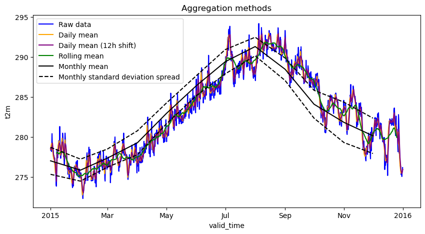

Daily statistics from hourly ERA5 data
[1]:
# If first time running, uncomment the line below to install any additional dependencies
# !bash requirements-for-notebooks.sh
[2]:
from earthkit.transforms import aggregate as ekt
from earthkit import data as ekd
from earthkit.data.testing import earthkit_remote_test_data_file
ekd.settings.set("cache-policy", "user")
import matplotlib.pyplot as plt
/tmp/ipykernel_4137/1981593677.py:1: FutureWarning: The 'earthkit.transforms.aggregate' module is deprecated and will be removed in version 2.X of earthkit.transforms. Please import the from earthkit.transforms, e.g.: from earthkit.transforms import spatial
from earthkit.transforms import aggregate as ekt
Load some test data
All earthkit-transforms methods can be called with earthkit-data objects (Readers and Wrappers) or with the pre-loaded xarray.
In this example we will use hourly ERA5 2m temperature data on a 0.5x0.5 spatial grid for the year 2015 as our physical data.
First we download (if not already cached) lazily load the ERA5 data (please see tutorials in earthkit-data for more details in cache management).
We convert the data to an xarray.Dataset with some additional options which are better suited for the data we are working with.
[3]:
# Get some demonstration ERA5 data, this could be any url or path to an ERA5 grib or netCDF file.
remote_era5_file = earthkit_remote_test_data_file("test-data", "era5_temperature_europe_2015.grib")
era5_xr = ekd.from_source("url", remote_era5_file)
era5_xr = era5_xr.to_xarray(time_dim_mode="valid_time").rename({"2t": "t2m"})
era5_xr
[3]:
<xarray.Dataset> Size: 660MB
Dimensions: (valid_time: 1460, latitude: 201, longitude: 281)
Coordinates:
* valid_time (valid_time) datetime64[ns] 12kB 2015-01-01 ... 2015-12-31T18...
* latitude (latitude) float64 2kB 80.0 79.75 79.5 79.25 ... 30.5 30.25 30.0
* longitude (longitude) float64 2kB -10.0 -9.75 -9.5 ... 59.5 59.75 60.0
Data variables:
t2m (valid_time, latitude, longitude) float64 660MB ...
Attributes: (12/13)
param: 2t
paramId: 167
class: ea
stream: oper
levtype: sfc
type: an
... ...
date: 20150101
time: 0
domain: g
number: 0
Conventions: CF-1.8
institution: ECMWFCalculate the daily mean and standard deviation of the ERA5 data
We can calculate the daily mean using daily_mean method in the temporal module. There are similar daily aggregation methods for the daily_median, daily_min, daily_max, daily_std, daily_sum, and all these again for monthly aggregations in the form monthly_XXX.
earthkit-aggregate is able to understand any data object understood by earthkit-data as input. The earthkit-aggregate computation is based on xarray datacubes, therefore the returned object is an xarray.Dataset. To convert this to an EarthKit object you could use the earthkit-data method, from_object.
If the input data is provided an xarray.Dataset then the return object is xarray.Dataset and if the input is an xarray.DataArray then the return object is an xarray.DataArray.
[4]:
era5_daily_mean = ekt.temporal.daily_mean(era5_xr)
era5_daily_std = ekt.temporal.daily_std(era5_xr)
era5_daily_mean
# ekd.from_object(era5_daily_mean)
# Note that the daily_mean and daily_std are convenience wrappers. It is also possible to achieve the same result using the following syntax:
# era5_daily_mean = ekt.temporal.daily_reduce(era5_xr, how="mean")
# It is also possible to achieve a similar result using the following syntax:
# era5_daily_mean = ekt.temporal.daily_reduce(era5_xr, how="mean")
# However, the daily_reduce methods have additional options for handling metadata data, therefore are recommended
[4]:
<xarray.Dataset> Size: 165MB
Dimensions: (valid_time: 365, latitude: 201, longitude: 281)
Coordinates:
* latitude (latitude) float64 2kB 80.0 79.75 79.5 79.25 ... 30.5 30.25 30.0
* longitude (longitude) float64 2kB -10.0 -9.75 -9.5 ... 59.5 59.75 60.0
* valid_time (valid_time) datetime64[ns] 3kB 2015-01-01 ... 2015-12-31
Data variables:
t2m (valid_time, latitude, longitude) float64 165MB 254.4 ... 285.8
Attributes: (12/13)
param: 2t
paramId: 167
class: ea
stream: oper
levtype: sfc
type: an
... ...
date: 20150101
time: 0
domain: g
number: 0
Conventions: CF-1.8
institution: ECMWFCalculate the monthly mean and standard deviation
[5]:
era5_monthly_mean = ekt.temporal.monthly_mean(era5_xr)
era5_monthly_std = ekt.temporal.monthly_std(era5_xr)
era5_monthly_std
[5]:
<xarray.Dataset> Size: 5MB
Dimensions: (valid_time: 12, latitude: 201, longitude: 281)
Coordinates:
* latitude (latitude) float64 2kB 80.0 79.75 79.5 79.25 ... 30.5 30.25 30.0
* longitude (longitude) float64 2kB -10.0 -9.75 -9.5 ... 59.5 59.75 60.0
* valid_time (valid_time) datetime64[ns] 96B 2015-01-01 ... 2015-12-01
Data variables:
t2m (valid_time, latitude, longitude) float64 5MB 6.104 ... 6.375
Attributes: (12/13)
param: 2t
paramId: 167
class: ea
stream: oper
levtype: sfc
type: an
... ...
date: 20150101
time: 0
domain: g
number: 0
Conventions: CF-1.8
institution: ECMWFCalculate a rolling mean with a 50 timestep window
To calculate a rolling mean along the time dimension you can use the rolling_reduce function.
NOTE: An improved API to the rolling_reduce method is an ongoing task
[6]:
era5_rolling = ekt.temporal.rolling_reduce(
era5_xr, 50, how_reduce="mean", center=True,
)
era5_rolling
[6]:
<xarray.Dataset> Size: 660MB
Dimensions: (valid_time: 1460, latitude: 201, longitude: 281)
Coordinates:
* valid_time (valid_time) datetime64[ns] 12kB 2015-01-01 ... 2015-12-31T18...
* latitude (latitude) float64 2kB 80.0 79.75 79.5 79.25 ... 30.5 30.25 30.0
* longitude (longitude) float64 2kB -10.0 -9.75 -9.5 ... 59.5 59.75 60.0
Data variables:
t2m (valid_time, latitude, longitude) float64 660MB dask.array<chunksize=(1459, 26, 36), meta=np.ndarray>
Attributes: (12/13)
param: 2t
paramId: 167
class: ea
stream: oper
levtype: sfc
type: an
... ...
date: 20150101
time: 0
domain: g
number: 0
Conventions: CF-1.8
institution: ECMWFAccount for non-UTC timezones
There is a time_shift argument which can be used to account for non-UTC time zones:
[7]:
era5_daily_mean_p12 = ekt.temporal.daily_mean(era5_xr, time_shift={"hours": 12})
era5_daily_mean_p12
[7]:
<xarray.Dataset> Size: 165MB
Dimensions: (valid_time: 366, latitude: 201, longitude: 281)
Coordinates:
* latitude (latitude) float64 2kB 80.0 79.75 79.5 79.25 ... 30.5 30.25 30.0
* longitude (longitude) float64 2kB -10.0 -9.75 -9.5 ... 59.5 59.75 60.0
* valid_time (valid_time) datetime64[ns] 3kB 2015-01-01 ... 2016-01-01
Data variables:
t2m (valid_time, latitude, longitude) float64 165MB 253.5 ... 285.6
Attributes: (12/13)
param: 2t
paramId: 167
class: ea
stream: oper
levtype: sfc
type: an
... ...
date: 20150101
time: 0
domain: g
number: 0
Conventions: CF-1.8
institution: ECMWFPlot a random point location to see the different aggregation methods
[8]:
isel_kwargs = {"latitude":100, "longitude":100}
fig, ax = plt.subplots(ncols=1, nrows=1, figsize=(10,5))
era5_xr.t2m.isel(**isel_kwargs).plot(label='Raw data', ax=ax, color='blue')
era5_daily_mean.t2m.isel(**isel_kwargs).plot(
label='Daily mean', ax=ax, color='orange'
)
era5_daily_mean_p12.t2m.isel(**isel_kwargs).plot(
label='Daily mean (12h shift)', ax=ax, color='purple'
)
# # To add the daily spread as orange dotted lines:
# upper_d = era5_daily_mean.t2m + era5_daily_std.t2m
# lower_d = era5_daily_mean.t2m - era5_daily_std.t2m
# upper_d.isel(**isel_kwargs).plot(ax=ax, label='Daily standard deviation spread', linestyle='--', color='orange')
# lower_d.isel(**isel_kwargs).plot(ax=ax, linestyle='--', color='orange')
# Add the rolling mean as green line:
era5_rolling.t2m.isel(**isel_kwargs).plot(label='Rolling mean', ax=ax, color='green')
# Add the monthly mean as a black solid line and spread as black dotted lines:
era5_monthly_mean.t2m.isel(**isel_kwargs).plot(label='Monthly mean', ax=ax, color='black')
upper_m = era5_monthly_mean.t2m + era5_monthly_std.t2m
lower_m = era5_monthly_mean.t2m - era5_monthly_std.t2m
upper_m.isel(**isel_kwargs).plot(ax=ax, label='Monthly standard deviation spread', linestyle='--', color='black')
lower_m.isel(**isel_kwargs).plot(ax=ax, linestyle='--', color='black')
# figure = fig[0].get_figure()
ax.legend(loc=2)
ax.set_title("Aggregation methods")
plt.show()

[ ]: